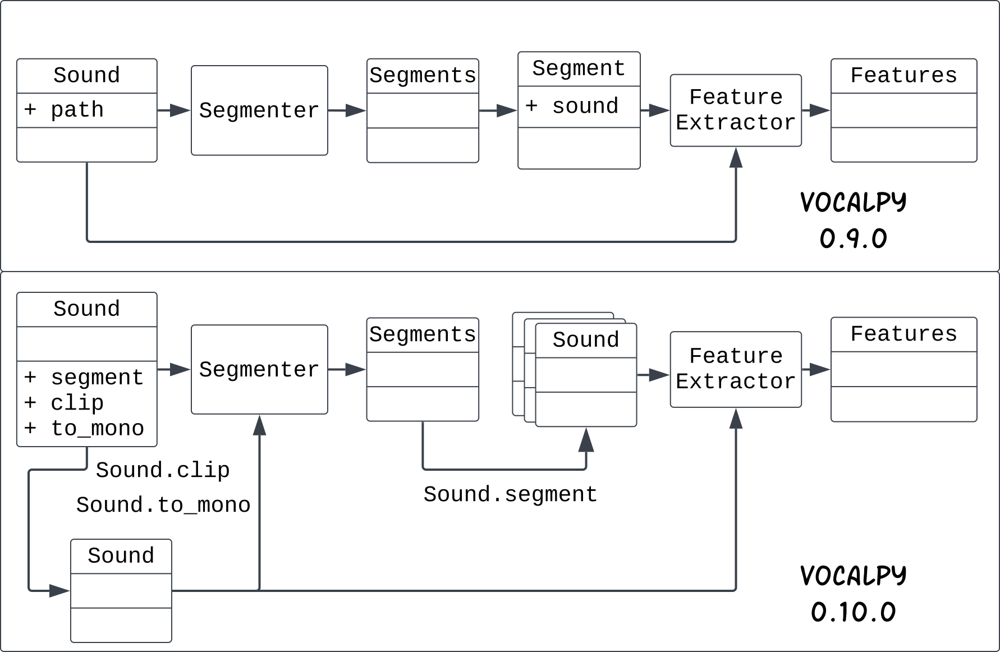

I want to write up what’s new in version 0.10.0 of VocalPy, released at the end of 2024. Here’s an overview:
- Better workflows for making sound clips and segmenting sound
- A simpler, consistent workflow for feature extraction
- More example data that’s easier to work with
- Vignettes on using VocalPy with scikit-learn, UMAP, and HDBSCAN
I’ll also give you an overview with this diagram of changes between version 0.9.0 (top ) and version 0.10.0 (bottom).

This diagram represents the working model I have of two of the main workflows in VocalPy. Below I’ll refer back to it, but this post will really focus on improvements and new features. I think diagrams like this are really important to help researchers and software engineers speak the same language—even when those two groups overlap— but I’ll save my thoughts on how to design software for this domain for other posts.
Bootcamp-driven development
First, some context. I am feeling good about this release because I think it’s a pretty solid step forwards for the package. I’ll tell you why that is, by giving you a brief rundown of the new features and changes, with some narrative that you won’t get from the CHANGELOG. You definitely won’t get that from the auto-generated release notes that GitHub gives us, because they consist of the single commit between this version and the last one. That single commit includes a lot of changes, that corresponds to this pull request, cryptically named “Post-NMAC GRC 2024 fixes”.
Throughout this post, I’ll link to specific issues on GitHub that were closed by that pull request, to hopefully show you that there’s a method to my madness. About that cryptic name for the pull request: a lot of the features I added and changes I made were after I co-organized and taught this Acoustic Communication And Bioacoustics Bootcamp at the 2024 Neural Mechanisms of Acoustic Communication 2024 Gordon Research Seminar (AKA NMAC GRC 2024, site here), together with the always-excellent Tessa Rhinehart. (Below I’ll call it the ACAB bootcamp for short.)
I want to give a huge, huge thank you to Nick Jourjine and Diana Liao for inviting Tessa and I to teach this workshop. I know firsthand how important the skills that we taught are, especially for graduate students. It was incredibly gratifying to hear as much from participants in the workshop and other organizers of the conference. If we did nothing else, we pointed people to a lot of resources including the website with a curated database of bioacoustics software that Tessa has created (newly updated just recently with an assist from the research group she’s in), as well as guides for scientists on programming and computational projects that I often point people to when I’m teaching. I think that computational methods in this research area will only continue to become more important (although of course I’m biased, and some might say I’m stating the obvious). I also think Nick has had a lot of foresight in connecting these areas of neuroscience to what people are doing in bioacoustics more broadly, for example with his seminar series “Bridging Brains and Bioacoustics”.
Without further ado, here’s a rundown of what’s new in VocalPy 0.10.0.
Better workflows for making sound clips and segmenting sound
The first set of features and changes have to do with two steps we often take when we begin any analysis of animal sounds.
Step one is to make clips of the sounds we want to analyze. Usually you need to do this because your raw data consists of hours of audio, e.g., from a recorder deployed in the field for passive acoustic monitoring, or in a behavioral experiment where you have a rig set up to start recording any time the signal from your microphone goes above some level. To make this step easier, the Sound class now has a clip method (as planned in issue #149)
import vocalpy as voc
sound = voc.Sound.read("big-audio-file-01.wav")
# first clip containing sound of interest
clip = sound.clip(start=0., stop=1.4)
clip.write("big-audio-file-01-clip-01.wav")
# second clip containing sound of interest
clip2 = sound.clip(start=1.4, stop=2.6)
clip2.write("big-audio-file-01-clip-02.wav")Notice in that snippet that we write the clip to a file. That’s because it’s just a Sound; that is, calling clip gives you a new Sound. Hopefully, that isn’t too surprising, but it brings me to the first breaking change: the Sound method no longer has a path attribute (as planned in issue #162). That means that, where before you had
>>> import vocalpy as voc
>>> voc.Sound.read("samba.wav")
Sound(data=array[0.001, -0.002, ...], samplerate=44100, path="samba.wav")now you have
>>> import vocalpy as voc
>>> voc.Sound.read("samba.wav")
Sound(data=array[0.001, -0.002, ...], samplerate=44100)Why does this matter?
Because the design of the class no longer implies that a Sound is tied to the data found in a file at a specific path. This seemingly minor change corresponds to a much bigger change in my mental model of VocalPy and how we work with it as researchers. Again, I’ll save a discussion of that for another post, assuming you’re just here for the “what’s new” part, not a unified theory of research software engineering.
That brings us to the second step that we frequently do at the start of an analysis: segment a sequence of sounds into units, for example, the syllables of birdsong. In version 0.10.0, the workflow for this has been significantly improved. Before I tell you how the workflow has been improved, let me give you a little background. One common way to segment sound is with signal processing-based methods that set a threshold on the audio signal energy, and consider any period above the threshold to be a segment (like the functions in vocalpy.segment). A cartoon diagram of this sort of method is shown below.
More recently it has become common to use statistical models–more precisely, neural network models for sound event detection such as TweetyNet and DAS. One thing we have noticed is that there is a gap in the literature comparing approaches to segmenting; that’s part of what we’re trying to make it easier to do (for us and for you). This is why we have a vocalpy.metrics.segmentation module. To make it easier to work with segments and compute these metrics, we represent the output of a segmenting algorithm as a data type, vocalpy.Segments. (You might know that some researchers also use image processing methods to segment a spectrogram into a set of boxes; that’s on our to-do list)
Now that we’re all on the same page about the background, how has the workflow improved? The original design had each of the functions in vocalpy.segment returned a Segments instance, that was a container for a list of separate Segment instances as well as an associated Sound. As of vocalpy 0.10.0, the vocalpy.Segments class no longer has an instance of a vocalpy.Sound associated with it, and there no longer is a separate Segment class (as planned in issue #154). This is another case where I realized life could be a lot easier by uncomplicating the design of the library (and, again, I’ll save discussion of that for a separate blog post). In place of all these tangled-together classes, we add a single method to the vocalpy.Sound class, vocalpy.Sound.segment, that takes as its argument a set of Segments, and returns a list of Sounds (as planned in issue #150). You might notice that you could, if you want, segment using the clip method I just told you about, saving each one of the segments you’re going to analyze as a clip. Again, without going to deeply into a discussion of software design, there’s a couple of drawbacks to that approach: first of all, you will end up taking up a bunch of disk space with duplicated data, and second, you will end up with directories full of tiny files that are hard to navigate if you end up needing to inspect some of your data (and, trust me, you will). Instead, what you want is to be able to represent the segments themselves as data, and then grab the audio clips on the fly. Yes, there are also good reasons to save intermediate steps in your analysis so you don’t have to start over from scratch every time you re-run it —for example, saving spectrograms you generate from the segments of audio— but that’s part of the design discussion I’m glossing over here. The last thing I added to the Segments class was the ability to load a set of segments from a csv file, through a Segments.from_csv method (as planned in issue #186). I realized during the bootcamp we ran that it’s pretty common to save segmentation in csv files, e.g., using the Python library Pandas, and so we should make it easier to load these. (VocalPy saves segments in a json file so we can track metadata like the sampling rate of the segmented audio, but that’s again more detail than I want to get into here.)
Ok, we made it through all the details about segemntation. Last thing: I want to thank Nick Jourjine (again)–talking with him about this kind of workflow really helped me think about how to improve it.
A simpler, consistent workflow for feature extraction
Once I had simplified the workflow for segmenting sounds, I realized I could simplify the workflow for extracting acoustic features from those sounds. We use a class, FeatureExtractor, to represent this generic step in the workflow; it has an extract method that gives you back Features. This extract method used to take four different things: either a Sound, a Segment (with its associated Sound), a list of Sounds, or a list of Segments. Obviously, it can’t accept a Segment or a list of them if I remove that class. Good, we can remove some code–that’s less to maintain. I modified the FeatureExtractor class to only take in a Sound or a list of Sounds (as planned in issue #163). I also had some inconsistencies where some functions in [vocalpy.feature] would return Features, and in other cases it was the FeatureExtractor taking the output of one of those functions and making it into a Features instance. So I fixed that inconsistency (as planned in issue #145 and issue #146). Last but not least, I renamed the two feature extraction functions we have right now: from the very verbose vocalpy.features.sat.similarity_features and vocalpy.features.soundsig.predefined_acoustic_features, to just vocalpy.features.sat and vocalpy.features.biosound (as planned in issue #190).
More example data that’s easier to work with
A crucial part of any scientific Python package is having example data, and having it be easy to work with, as I found out the hard way during our live demo at the ACAB bootcamp (protip: always make sure your code is never implicitly assuming you have access to the internet). Thankfully, for most of the Jupyter notebooks we worked through in the bootcamp, we had asked participants to download data ahead of time. In VocalPy 0.10.0, you can now download mini-versions of these datasets (as planned in issue #183), so that you can work through these notebooks, that are now vignettes in the documentation (see next section of this post). Additionally, I added single audio files to use on the two built-in segmenting methods (as planned in issue #182). I also refactored the way examples work, again simplifying things (as planned in issue #185). I’ll spare you the details of what I refactored; the key idea is that calling vocalpy.example with the name of an example will now give you back a VocalPy data type by default, e.g. a Sound. Before you got back a path to a file by default, and you had to do the work of loading data from that file. In the case where it’s one of the datasets with multiple files, you now get back an instance of ExampleData, a sort of Python dictionary where here also the default is the value for each key is a list of VocalPy data types. If you want filenames instead of data types, e.g. to demonstrate functionality for loading data from files, you can instead specify path=True.
Vignettes on using VocalPy with scikit-learn, UMAP, and HDBSCAN
One of the goals of VocalPy is to make it easy to do stuff that’s specific to acoustic communication research, and also get out of the way and make it easy to work with other packages in the scientific Python ecosystem. In the ACAB bootcamp, we worked through a couple of notebooks that show this in action. Specifically, we showed how to fit a classifier in scikit-learn, and how to reduce the dimensionality of a set of animal sounds with UMAP, and cluster the embeddings from UMAP with HDBSCAN. One more thank you to Nick Jourjine, who kindly put together a demo-sized dataset for this second exercise, from the much larger dataset that accompanied his paper on two types of pup calls in deer mice (and let’s also recognize and thank him for actually sharing the code that will make it easier for otherss to build on this work!) In VocalPy 0.10.0, I have added these notebooks as vignettes in the documentation here (as planned in issue #166 and issue #168). I want to be sure to point out that the scikit-learn vignette is adapted from Frederic Theunissen’s BioSound tutorial, because we’re using the set of acoustic features built into their soundsig.BioSound class The UMAP vignette is adapted from this helpful paper by Thomas et al. and the accompanying code. Again, I’m just trying to make what they’ve done easier for everyone else to do, by focusing a little more on the software engineering side of things.
Stay tuned
Hopefully you have a better understanding of how VocalPy is evolving after reading this post. It is now easier to make clips from your raw data, segment your sounds of interest, and extract acoustic features from those sounds. It’s also easier to demonstrate all this functionality with the example data built into VocalPy. Last but not least, it’s easier to see from the docs how you can take what you get out of VocalPy and use it with other Python packages like scikit-learn and UMAP-learn. Having done this development work, for now I will be focusing on new statistical models for jointly segmenting and classifying animal sounds that I’m developing with Yarden Cohen, based on what we’re learning about existing models. (I also want to thank Yarden for continuing our collaboration; without him none of this would be possible.) While I work on those new models and on the next version of VocalPy, we’d love to have your input in our forum. And of course, if you find a bug or you have your own ideas for features, you can raise an issue on the VocalPy repo.